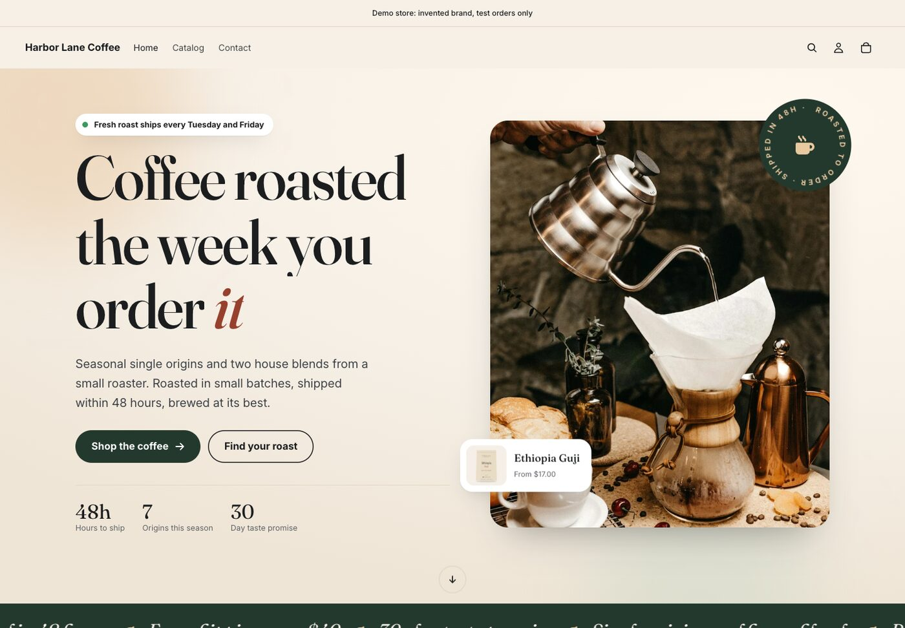
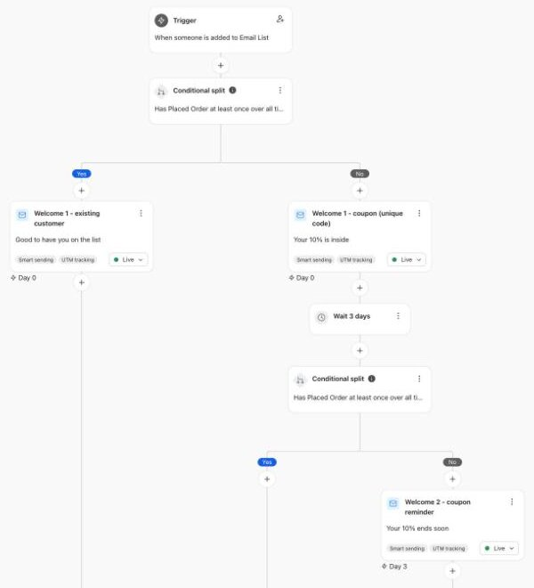
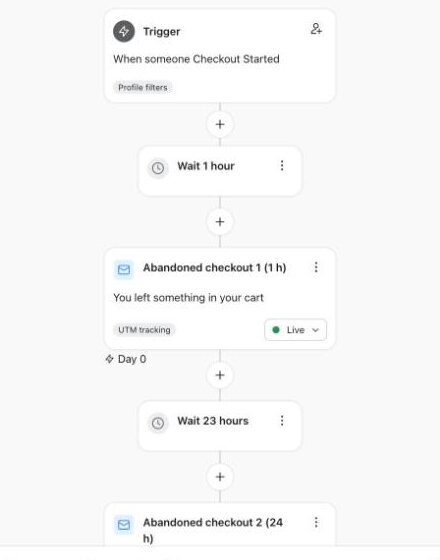
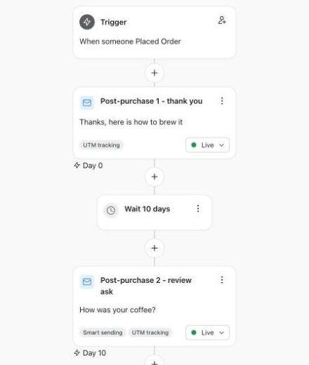
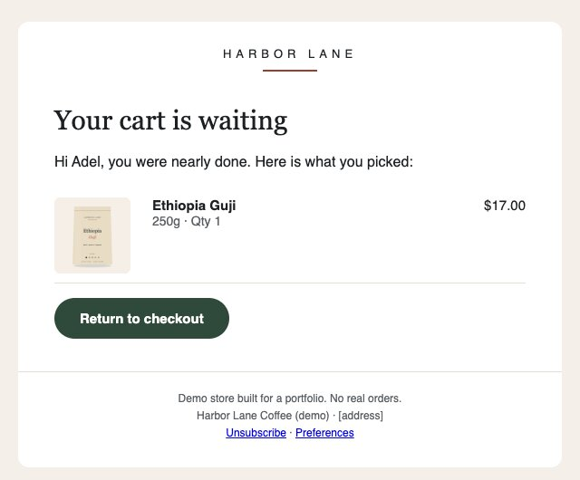
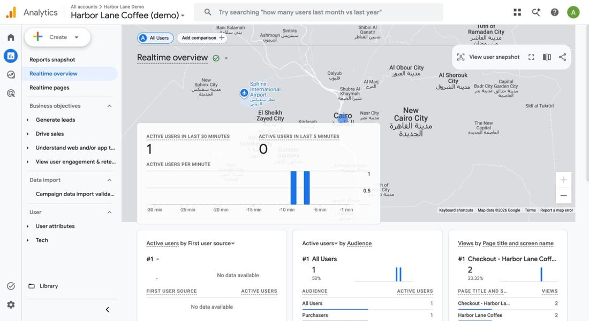
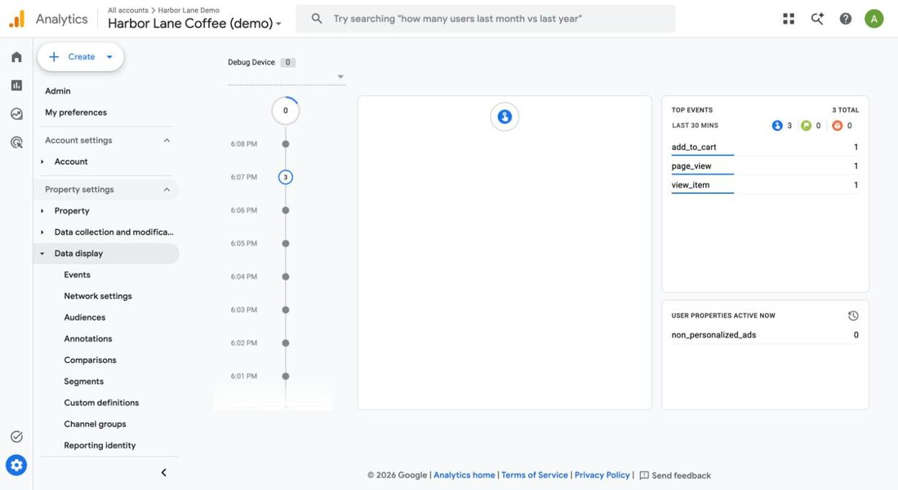

Harbor Lane Coffee is an invented brand on a Shopify development store. I built the retention and conversion work that Shopify brands keep hiring for, then checked each piece with a script or a real test order: Klaviyo flows, an A/B test with a sample-size plan, a 301 redirect map, a coded Mailchimp email and GA4 purchase tracking.
My Shopify proof was custom Liquid themes. When I read the Shopify job posts I was screening, the same gaps kept coming up: Klaviyo, A/B testing, Shopify CLI, CRO and the Admin GraphQL API. Upwork posts add three paid problems on top:
/product/, Shopify uses /products/, and every old URL needs a 301.So I built a coffee store with a real catalogue and solved each of these on it. The rule for the project was that nothing counts until a script or a test order proves it.




A test shopper started checkout and paid with Shopify's test gateway inside the hour. Klaviyo recorded every step from product view to order. The post-purchase email arrived 1 minute after the order, and the abandoned flow sent nothing, which is exactly what it should do.

Shopify Rollouts isn't available on development stores, so the split runs in the theme. Variant B shows a quick add button on product cards.
| Check (78 simulated sessions) | Result |
|---|---|
| Errors | 0 |
| Split A / B | 39 / 39 |
| Correct page for the variant | 78 / 78 |
| Same variant after reload | 78 / 78 |
| Cart attribute matches variant | 78 / 78 |
I mapped 30 old WooCommerce-style URLs (products, categories, tags and pages) to their new Shopify addresses. The redirects were created through the Admin GraphQL API and also exported as Shopify's CSV import file. A checker requests every old URL with and without the trailing slash, then confirms one 301 hop to the right page, which answers 200.
Finding: Shopify serves /shop itself, and URL redirects only fire on a 404, so /shop can't be redirected. Old links to it have to be fixed at the source.
A custom pixel sends view_item, add_to_cart, begin_checkout and purchase. Each event carries its items and the A/B variant. I verified it in GA4 Realtime with a real browser and the test order, and the purchase counted as a key event.


Three findings worth knowing if you set this up:
page_view.debug_mode on the config doesn't reach the events, so DebugView stays empty. Set it on each event.Seven custom sections and three blocks on Horizon, all editable in the theme editor: quick add, sticky add to cart on mobile, a roast picker (accessible tabs), a roast meter, a brew calculator, and trust badges next to the button. Mobile Lighthouse medians on the live theme: home 89, product 88, collection 84. These are lab numbers from a shared dev-store host.
A 600 px table layout with inlined CSS and merge tags, imported as a custom-coded template, test-sent, and checked on desktop and phone. On the free plan you can import, preview and test-send it. Sending a campaign with it needs the Standard plan.
| Piece | How it was checked | Result |
|---|---|---|
| Klaviyo flows | Test profiles and a test-gateway order | Events received · post-purchase sent in 1 min · abandoned flow correctly silent |
| Email templates | Klaviyo's renderer and a real send | 7 / 7 render with every tag filled; the coupon email (unique codes only exist on a real send) was delivered to a test inbox |
| A/B mechanics | 78 simulated sessions | 78 / 78 correct variant, sticky cookie, cart attribute |
| Redirects | Checker script | 60 / 60, one hop each |
| GA4 | Network capture, Realtime, DebugView | All 5 ecommerce events, purchase as key event |
| Theme speed | Lighthouse mobile, median of 3 | 89 / 88 / 84 |
A development store has no real visitors, so there are no conversion or revenue results here. The A/B test is built and checked with simulated sessions; a real result needs a store with enough traffic, and the sample-size table says how much. Emails went to my own test inboxes only.
On your store, the same work becomes fixed-scope jobs: a Klaviyo flow audit and fix, a redirect map with a checker for a re-platform, a purchase-tracking fix, or an A/B test setup with a sample-size plan.
Tell me what's leaking: emails, tracking, redirects or the product page. I'll tell you straight whether I can help.